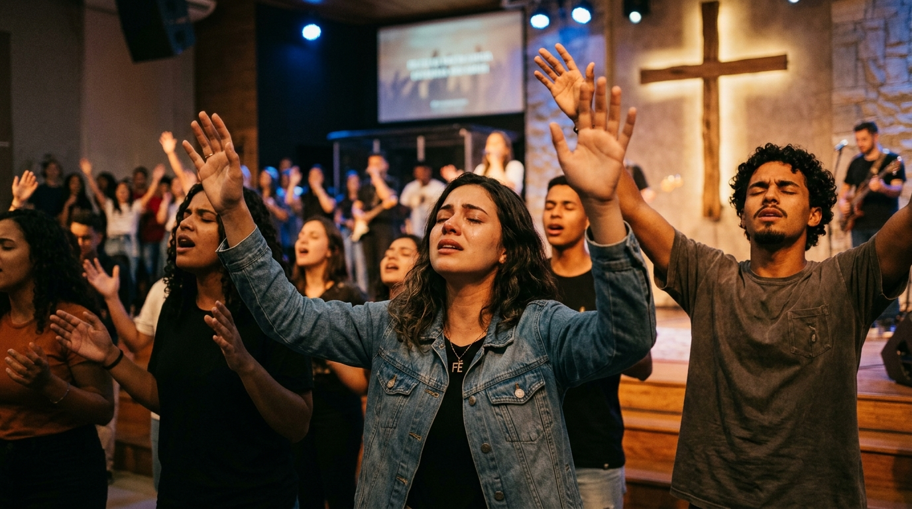
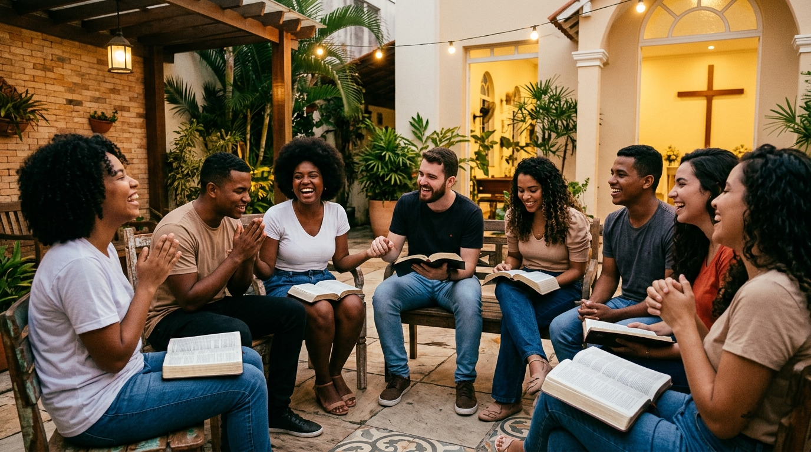
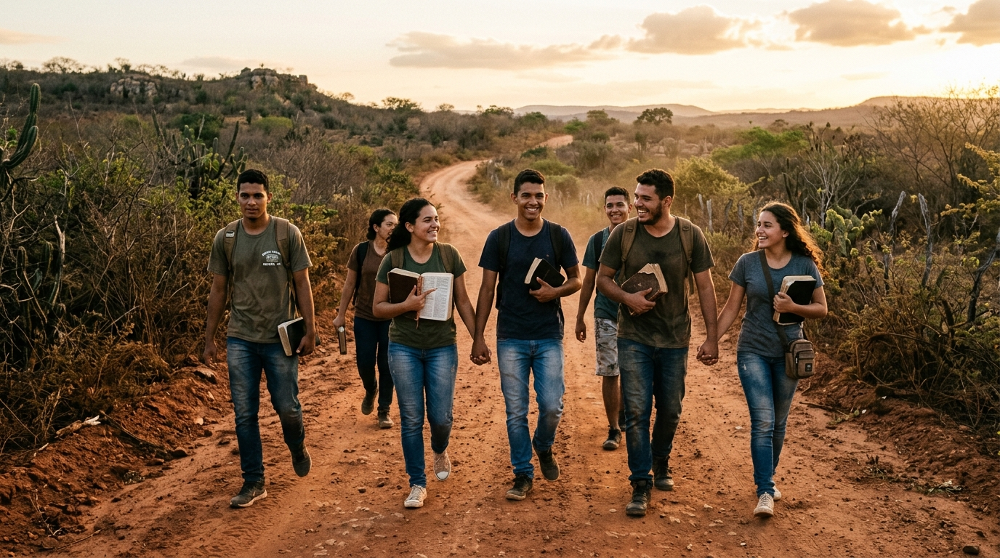
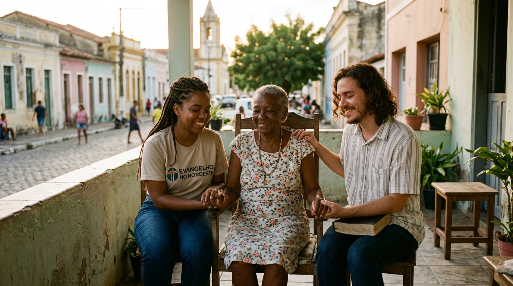
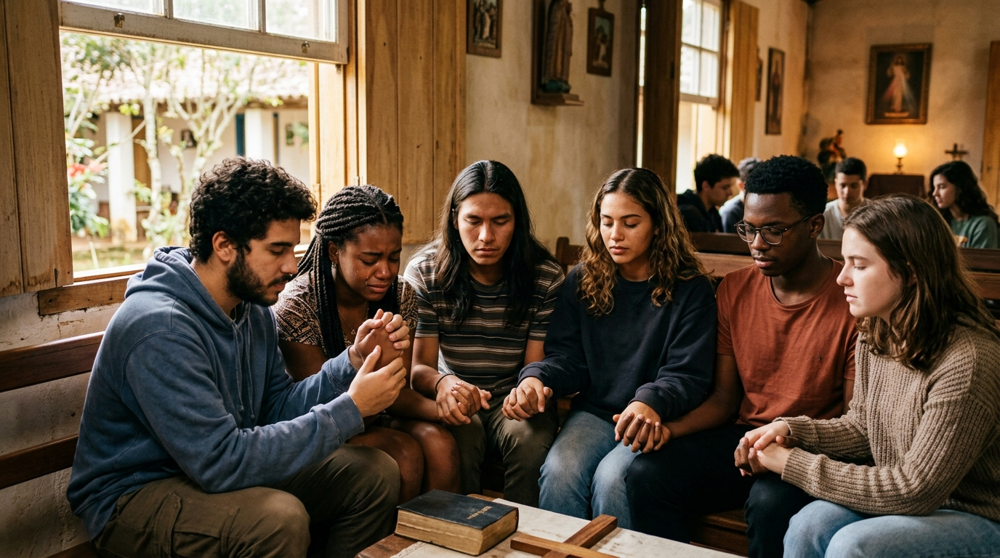
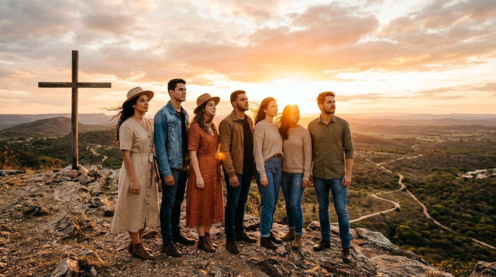

JOVENS COM PROPÓSITO
Deus estabeleceu um propósito para cada vida. Um movimento formado por jovens de diferentes cidades, unidos para despertar uma geração adormecida, fortalecer a comunhão e servir com compromisso.
Role para conhecer nossa históriaNÃO VIVEMOS DE FORMA ALEATÓRIA. VIVEMOS COM DIREÇÃO, FÉ E CONVICÇÃO.
Somos jovens vindos de todas as cidades, do sertão à capital, carregando em nossos corações histórias diferentes, realidades distintas e experiências únicas.
Ainda assim, algo nos une de forma profunda: o entendimento claro do propósito que Deus estabeleceu para cada uma de nossas vidas. Acreditamos que a salvação é individual, mas a caminhada nunca foi feita para ser solitária. Juntos, nos tornamos mais fortes, mais firmes e mais preparados para cumprir o chamado que recebemos.


POR QUE EXISTIMOS?
O projeto nasceu com o desejo de despertar jovens para a fé, fortalecer a comunhão e incentivar uma caminhada de serviço, dedicação e compromisso.
Muitos jovens estavam dispersos, desmotivados ou adormecidos na fé em suas rotinas e realidades locais. Ao mesmo tempo, havia uma sede espiritual crescente e um anseio coletivo por reavivamento genuíno que precisava de direção, suporte e unidade.
Mais do que apenas reunir pessoas em programações passageiras, o JCP foi levantado para construir uma caminhada coletiva sólida, onde cada jovem reconhece que foi alcançado por Deus para ser canal de vida em sua igreja local e em sua comunidade.
“Existe vida no sertão da Paraíba. E essa vida pulsa quando a juventude desperta para o seu propósito eterno.”
NOSSA HISTÓRIA
Quando Deus inicia algo, Ele mesmo capacita, direciona e acrescenta tudo aquilo que é necessário para que o Seu propósito se cumpra.
A Sensibilidade de Pedro
O projeto nasceu no coração de um jovem chamado Pedro, que, sensível à voz de Deus, foi guiado e despertado com um propósito claro: alcançar e levantar outros jovens que estavam dispersos e adormecidos na fé.
Encontros Diários às 22h
Movido por essa direção, Pedro deu o primeiro passo iniciando um grupo online e convidando jovens de igrejas de regiões próximas para participarem de encontros que aconteciam diariamente às 22h.
Uma Sede Espiritual Coletiva
O que começou de forma simples logo revelou algo muito maior. À medida que novos jovens foram chegando, ficou evidente que havia uma sede espiritual crescente e um desejo coletivo de reavivamento.
Pessoas Somando com Amor
Diante dessa expansão, surgiu a necessidade de organização, cuidado e liderança. Em oração, foram buscadas pessoas que pudessem somar com dons e disposição.
NOSSO PROPÓSITO
Reconhecemos que cada jovem carrega talentos e chamados que muitas vezes estão adormecidos. Trabalhamos para despertar essa identidade no Reino de Deus.
MISSÃO
Glorificar a Deus em tudo o que fazemos, vivendo e proclamando o Evangelho de forma verdadeira, relevante e transformadora. Despertar a identidade de cada jovem, desenvolvendo seus dons para servir com excelência nas igrejas locais e na sociedade.
VISÃO
Alcançar jovens do sertão à capital da Paraíba e além, erguendo uma geração fundamentada na Palavra, consolidada na comunhão e ativa na evangelização. Ver jovens servindo com paixão viva e liderando com integridade nas suas cidades.
PROPÓSITO
Construir uma caminhada coletiva que não deixe ninguém para trás. Estender a mão nas dificuldades, amadurecer na fé em unidade e conduzir cada vida a compreender e cumprir aquilo que Deus sonhou para ela antes da fundação do mundo.

O IDE
Nossa fé não se encerra dentro de quatro paredes. O Evangelho se manifesta quando nos levantamos para ir ao encontro de quem precisa de esperança e verdade.
IR
Romper a zona de conforto e avançar pelas ruas, bairros e cidades do sertão e da capital, respondendo com prontidão à direção do Espírito Santo.
SERVIR
Atuar de maneira prática e humilde, apoiando as igrejas locais, amparando os necessitados e colocando nossos dons à disposição da obra.
EVANGELIZAR
Anunciar com clareza, ousadia e amor o Evangelho do Reino de Deus, ministrando cura, reconciliação e o perdão disponível em Cristo Jesus.
FAZER DISCÍPULOS
Cuidar dos que chegam, acompanhar o amadurecimento na fé e capacitar novos jovens para que também se tornem proclamadores da verdade.
“Portanto, vão e façam discípulos de todas as nações, batizando-os em nome do Pai e do Filho e do Espírito Santo...”
Mateus 28:19COMO O JCP ACONTECE
Uma caminhada integrada entre momentos online de fortalecimento contínuo e encontros presenciais de impacto nas comunidades locais.
DEVOCIONAIS VIRTUAIS
Um tempo separado especialmente para buscar a presença de Deus mesmo à distância, unindo jovens de diferentes municípios que não poderiam se encontrar fisicamente toda semana.
- Momentos intensos de oração congregacional e intercessão;
- Louvor genuíno e adoração sincera;
- Ministração e estudo prático da Palavra de Deus;
- Fortalecimento dos laços fraternos e comunhão entre cidades.
EDIÇÕES & AÇÕES LOCAIS
Ao longo do ano, realizamos edições e encontros presenciais nas igrejas locais, conforme somos convidados por pastores e líderes de diferentes regiões do sertão e capital.
- Cultos de comunhão, adoração e ministração profunda;
- Evangelismo nas ruas e praças levando esperança;
- Ações sociais de cuidado e doação às famílias do sertão;
- Oficinas ministeriais para potencializar os dons da juventude.
A EXPERIÊNCIA JCP
Imagens que traduzem a verdade de uma juventude que consagrou seus talentos ao Reino.

CONTRIBUA COM O PROPÓSITO
O Reino avança através da união de quem ora, de quem oferta e de quem vai. Escolha como você deseja caminhar conosco nesta missão.
CONTRIBUIR ORANDO
Assuma um compromisso pessoal de interceder pelo projeto, pela liderança e por cada jovem alcançado. Mobilize também sua célula ou igreja para levantarem um clamor constante.
CONTRIBUIR FINANCEIRAMENTE
Cada oferta é uma semente plantada que possibilita a realização das edições, logística no sertão, suporte aos materiais e expansão da obra. Contribua via PIX direto.
CONTRIBUIR INDO
Disponha seus dons, talentos e tempo para ir aos campos, atuar no serviço voluntário, evangelizar e participar ativamente das ações presenciais do Jovens com Propósito.

QUAL É O SEU PROPÓSITO?
Você não foi chamado para caminhar sozinho nem para viver de forma indiferente. Existe um lugar para você neste propósito eterno. Una-se a nós e venha impactar esta geração.